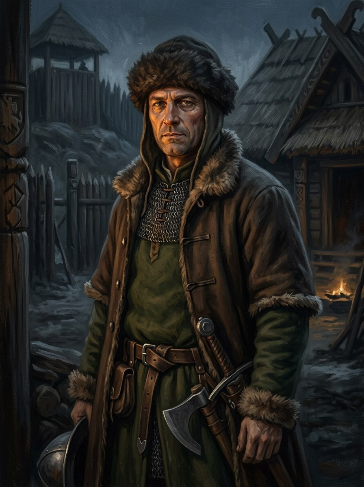

Jonas Goštautas¶
Summary¶
Jonas Goštautas (d. 1458), the council lord who coordinates the elevation of Casimir in 1440; at the feast of Book V ch. 17 he gives a warm coin to a beggar (event).
Jonas Goštautas

Jonas Goštautas · character¶
Type |
character |
Years |
?–1458 |
Status |
Historical record |
Note |
Voivode of Trakai, then Vilnius voivode and chancellor; conspirator of the 1432 coup; coordinated the election of Casimir (1440). VLE calls his part in the 1440 murder uncertain. |
Appearance & tells¶
Book V paints him as heavy-set and full-faced, with a thick chain whose weight “said more than his words” (ch. 3); by 1440 grey, broad-shouldered, riding at the young Casimir’s right (ch. 23); by about 1447 changed “like well-built buildings: without visible marks, but irreversibly” (ch. 26). He stands at windows, leaning on the frame, and smiles with one corner of his mouth. At the 1437 feast he knows every brick of the floor, which came from Danzig via Riga, and the count of the sixteen that broke at the Vilnia ford. Tell: he counts.
Want · Need · Lie · Truth¶
Want (external) |
To make the council lords, not Trakai’s prince, the real government of Lithuania, and to put a child on the throne against Kraków’s will. |
Need (internal) |
To give something once without counting it. |
Lie they believe |
That the realm is a ledger and that he who fears gives: “Kas bijo, tas dalija” (ch. 17). |
Truth they learn (or refuse) |
The warm coin, passed on to a beggar without a glance, silences the Counter for three breaths: not everything is counted (ch. 17). |
Arc by book¶
Book IV (1413): one of the 47 family names read at Horodło (ch. 2).
Book V (1430-1447): the first of the lords at Švitrigaila’s elevation (ch. 3); the soft-spoken ringleader of the Trakai conspiracy of 1432, in a fisherman’s hat that doesn’t suit him (ch. 8); present at the Ašmena night (ch. 9); POV of ch. 17 (Aukso Rijūno Puota, Feb 1437): receives forty-two villages near Ašmena from the Grand Duke, gives the warm coin to a beggar; raises twelve-year-old Casimir as Grand Duke on 29 June 1440 (ch. 23); drafts the privilege of c. 1447 that bars arrest “without trial” (ch. 26).
Power & magic¶
Tier 0: no gift of his own. He is a man the Gold-Glutton works through: warm coins, “money that warms from someone else”, turn up in a bishop’s chest, in Daugirdas’s sleeve and in his own wife’s purse; the Counter speaks under the floor of every hall. His one act outside the ledger is the coin he gives to the beggar. Records of the family: Goštautai.
Record vs saga¶
[Historical record]: Captured defending Lutsk in 1431; conspirator of the 1432 coup; voivode of Trakai, then Vilnius voivode and chancellor 1443-58 (sources differ on start years); coordinated the 1440 election of Casimir. VLE calls his part in the 1440 murder uncertain; the killers are recorded as the Czartoryski brothers, Švitrigaila’s partisans.
[The saga’s invention]: The Counter, the warm coin, the ledger of villages (Book V ch. 17); the harness-mark in ch. 21 is an insinuation, not a claim.
Pronunciation¶
JO-nas GOŠ-tau-tas (/ˈjoːnɐs ˈɡoʃtɐʊtɐs/), English respelling YOH-nahs GOHSH-tow-tahs; the surname is stressed on the first syllable, -tau- as in “cow”. Polish Jan Gasztołd.
Appearances¶
Book IV: ch. 2 (as a family name). Book V: ch. 3, 8, 9, 10, 17 (POV), 21, 23, 26 and the afterword. The record has him as Vilnius voivode and chancellor 1443-58; en.wikipedia gives 1443-58 for both, while some sources call him voivode of Trakai in 1440.
Relations
Took part in: Goštautas gives the warm coin to a beggar · Žygimantas’s coup at Ašmena
Timeline¶
Year |
Event |
Book |
|---|---|---|
1432-08-31 |
V · The Wolf’s Legacy |
|
1437 |
V · The Wolf’s Legacy |
Connections¶
graph LR
ev_coup_1432["Žygimantas's coup at Ašmena"]
ev_gostautas_coin["Goštautas gives the warm coin to a beggar"]
gostautas["Jonas Goštautas"]
gostautas -->|Took part in| ev_coup_1432
gostautas -->|Took part in| ev_gostautas_coin
style gostautas stroke-width:3px